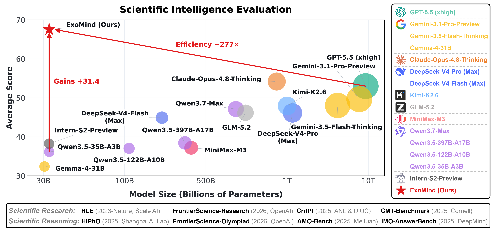
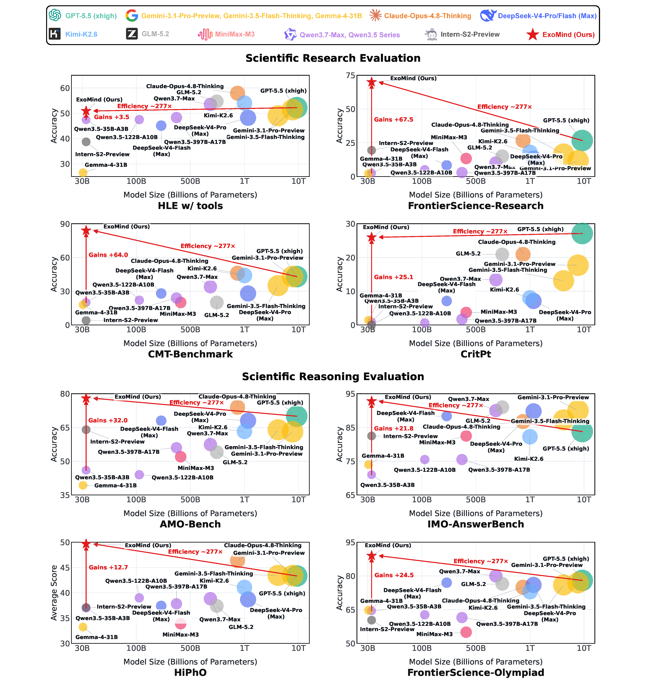
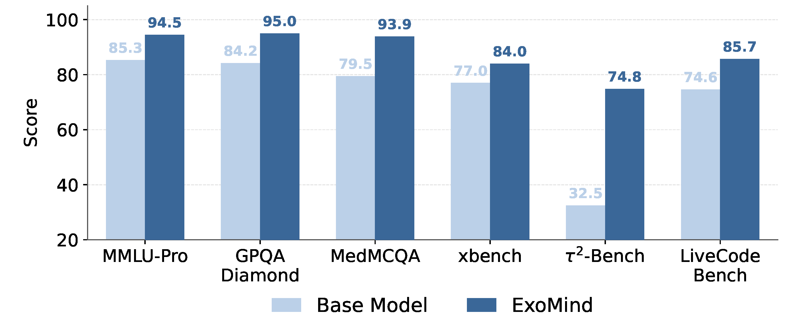
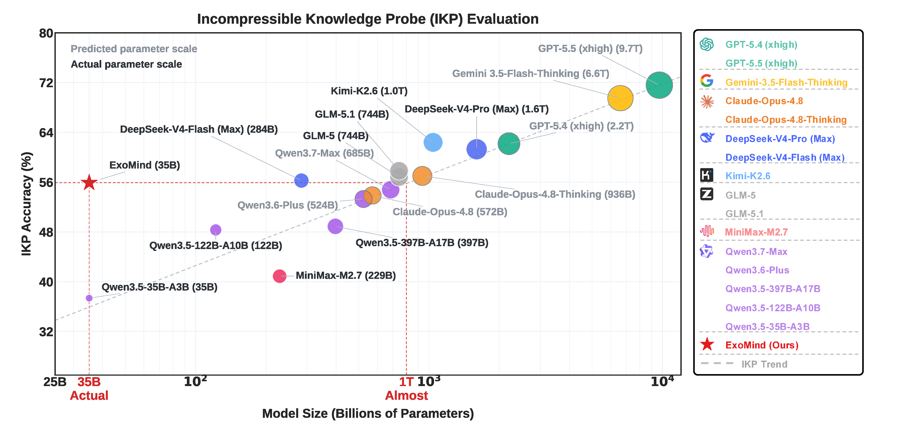

Performance Landscape
35B model, frontier-level scientific intelligence

Extended-Mind-Inspired Agentic System
Democratizing scientific intelligence for research and reasoning with a compact, interaction-driven agentic system.
Surpassing Frontier Proprietary Models in Scientific Reasoning and Research with Less Data, Small Model, and Low-cost Training.
“The mind is not confined to the brain, but extends into tools, artifacts, and the environment with which it interacts.”
Andy Clark and David Chalmers

Benchmark Results
Higher is better. The table groups research benchmarks, reasoning benchmarks, and the overall average. The best is highlighted.
| Model | Scientific Research | Scientific Reasoning | Avg. | ||||||
|---|---|---|---|---|---|---|---|---|---|
| HLE w/tools | FS-R | CMT | CritPt | AMO | IMO | HiPhO | FS-O | ||
| ExoMind | 50.9 | 70.0 | 84.0 | 26.0 | 78.0 | 92.8 | 49.7 | 89.0 | 67.5 |
| GPT-5.5 (xhigh) | 52.2 | 26.7 | 43.0 | 27.1 | 70.0 | 83.8 | 43.3 | 78.0 | 53.0 |
| GPT-5.4 (xhigh) | 52.1 | 33.0 | 42.0 | 23.4 | 66.0 | 85.4 | 42.9 | 78.0 | 52.9 |
| Gemini-3.1-Pro-Preview | 51.4 | 11.7 | 43.0 | 17.7 | 63.1 | 90.0 | 43.4 | 77.0 | 49.7 |
| Gemini-3.5-Flash-Thinking | 49.0 | 16.7 | 35.0 | 13.1 | 64.0 | 87.3 | 43.5 | 76.0 | 48.1 |
| Gemma-4-31B | 26.5 | 2.1 | 18.0 | 1.4 | 39.3 | 74.0 | 33.2 | 64.8 | 32.4 |
| Claude-Opus-4.8 | — | 12.5 | 28.0 | 20.4 | 72.0 | 86.8 | 44.5 | 74.0 | 53.0 |
| Claude-Opus-4.8-Thinking | 57.9 | 26.7 | 46.0 | 20.9 | 74.0 | 86.8 | 46.4 | 75.0 | 54.2 |
| DeepSeek-V4-Pro (Max) | 48.2 | 13.3 | 28.0 | 7.1 | 68.0 | 89.8 | 38.7 | 76.0 | 46.1 |
| DeepSeek-V4-Flash (Max) | 45.1 | 8.3 | 28.0 | 7.1 | 68.0 | 88.4 | 37.4 | 77.0 | 44.9 |
| Kimi-K2.6 | 54.0 | 17.9 | 44.0 | 8.0 | 63.3 | 82.3 | 41.1 | 73.0 | 47.9 |
| Kimi-K2.5 | 50.2 | 13.3 | 20.0 | 3.1 | 61.8 | 81.8 | 39.3 | 71.0 | 42.6 |
| GLM-5.2 | 54.7 | 15.0 | 20.0 | 20.9 | 54.0 | 91.0 | 37.4 | 76.5 | 46.2 |
| GLM-5.1 | 52.3 | 10.0 | 32.0 | 4.6 | 47.4 | 83.8 | 35.9 | 70.0 | 42.0 |
| GLM-5 | 50.4 | 8.8 | 22.0 | 2.0 | 49.0 | 82.5 | 36.3 | 65.8 | 39.6 |
| MiniMax-M3 | — | 13.3 | 20.0 | 3.7 | 52.0 | 82.5 | 33.9 | 55.0 | 37.2 |
| MiniMax-M2.7 | — | 7.1 | 10.0 | 0.6 | 50.0 | 71.8 | 31.3 | 59.5 | 32.9 |
| Qwen3.7-Max | 53.5 | 10.0 | 34.0 | 13.4 | 57.4 | 90.0 | 38.8 | 80.0 | 47.1 |
| Qwen3.6-Max-Preview | 51.0 | 15.0 | 28.0 | 3.7 | 44.0 | 76.8 | 36.5 | 69.3 | 40.5 |
| Qwen3.6-Plus | 50.6 | 5.8 | 26.0 | 2.9 | 48.0 | 75.5 | 40.9 | 66.3 | 39.5 |
| Qwen3.6-35B-A3B | 36.2 | 2.9 | 20.0 | 0.3 | 58.8 | 78.0 | 37.7 | 60.3 | 36.8 |
| Qwen3.5-397B-A17B | 48.3 | 2.9 | 24.0 | 1.7 | 56.0 | 75.5 | 37.8 | 61.5 | 38.5 |
| Qwen3.5-122B-A10B | 47.5 | 5.0 | 22.0 | 0.6 | 44.0 | 75.5 | 39.0 | 62.8 | 37.0 |
| Qwen3.5-35B-A3B | 47.4 | 2.5 | 20.0 | 0.9 | 46.0 | 71.0 | 37.0 | 64.5 | 36.2 |
| P1-VL-235B-A22B | — | 6.7 | 14.0 | 1.4 | 47.5 | 70.6 | 39.3 | 64.3 | 34.8 |
| P1-VL-30B-A3B | — | 4.6 | 10.0 | 0.0 | 44.5 | 65.3 | 35.0 | 52.5 | 30.3 |
| P1-235B-A22B | — | 7.5 | 16.0 | 0.0 | 53.5 | 70.8 | 35.9 | 62.0 | 35.1 |
| P1-30B-A3B | — | 4.2 | 12.0 | 0.0 | 44.3 | 66.2 | 32.5 | 54.8 | 30.6 |
| SU-01 | — | 11.7 | 8.0 | 0.0 | 59.8 | 77.5 | 35.0 | 61.5 | 36.2 |
| Intern-S2-Preview | 38.7 | 19.4 | 4.0 | 0.0 | 64.0 | 82.5 | 37.1 | 60.3 | 38.3 |
Scientific Benchmarks
ExoMind consistently improves over the base model on all eight datasets and surpasses leading open and closed-source models on most of them, achieving frontier-level performance at 35B scale with roughly 277x fewer parameters than GPT-5.5.

General Intelligence
ExoMind improves over the 35B base model across six general intelligence benchmarks, with gains spanning multi-domain reasoning, expert QA, medical QA, code generation, and interaction-oriented tasks.

Knowledge Probe
IKP evaluation shows that ExoMind substantially improves the IKP accuracy of the base 35B model.
The result reaches a level close to models with approximately one trillion parameters, suggesting a new dimension for scaling scientific intelligence through interaction.

Ecosystem
ExoMind is designed to sit within a broader open ecosystem of scientific reasoning models, benchmarks, and multi-agent systems.
Physics olympiad reasoning models trained with reinforcement learning.
High-level physics olympiad benchmark for multimodal scientific reasoning.
Routing and aggregation system for scalable model selection and evidence use.